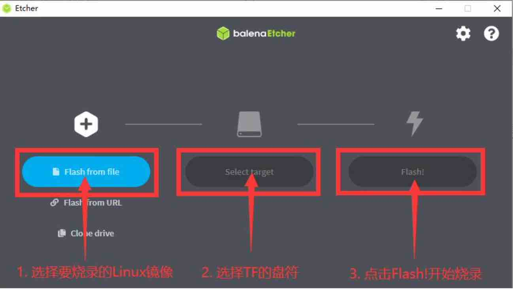
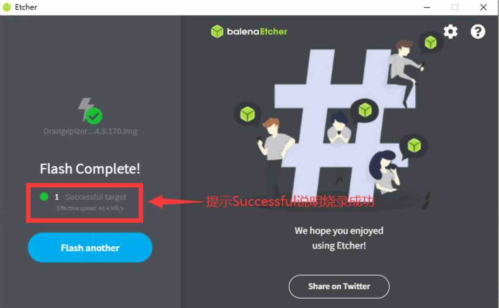

首次启动
准备工作
- TF卡一张，建议容量16G以上Class10的内存卡
- 读卡器以及启动盘烧录软件(balenaEtcher)
注意! OPiKVM CM4发货时已经预先刷好镜像,您不需要再烧录,如果需要重新刷镜像按照下列方法烧录镜像
OPiKVM zero3镜像分为1.5GB内存版本和1/2/4G内存版本，请根据您的Orangepi zero3的内存大小选择对应镜像
OPiKVM系统镜像下载地址:
-
OPiKVM Zero3:百度网盘:https://pan.baidu.com/s/1TdOHb8n919HN9NJ6BFJ_OA?pwd=3yvl 提取码：3yvl
-
OPiKVM CM4:百度网盘:https://pan.baidu.com/s/1WLU8PWNLYQHd7MqJCvai-g?pwd=x31u 提取码: x31u
使用balenaEtcher烧录镜像的具体步骤如下所示
-
首先选择要烧录的镜像文件的路径
-
然后选择TF卡的盘符
-
最后点击Flash就会开始烧录Linux镜像到TF卡中

- 成功烧录完成后balenaEtcher的显示界面如下图所示，如果显示绿色的指示图标 说明镜像烧录成功，此时就可以退出balenaEtcher，然后拔出TF卡插入到开发板的TF卡槽中使用了。

接通电源
切记 不要! 插入电压输出大于5V的电源适配器，会烧坏开发板。
- 连接一个 5V/3A 的 USB Type-C 接口的高品质的电源适配器
- 系统上电启动过程中很多不稳定的现象基本都是供电有问题导致的，所以一个靠谱的电源适配器很重要。如果启动过程中发现有不断重启的现象，请更换下电源或者Type-C数据线再试下。
- ype-C电源接口是不支持PD协商的。
Tip
- 首次上电时系统会进行初始化，此时oled屏幕上会提示"系统正在初始化中，请勿中断"，请稍微等待至屏幕出现设备ip地址后，系统加载完成。
等待系统初始化完成
✮ ✮ ✮ 重要!修改密码! ✮ ✮ ✮
PiKVM默认密码:
- Linux admin (SSH, console, 等.): 用户名
root和orangepi, 密码都为orangepi。 - PiKVM Web登录页面 (API, VNC...): 用户名
admin, 密码admin, 默认未启用2FA code.
这是两个独立的实体，拥有独立的账户。
您需要通过SSH或Web终端更改密码。 如果您使用的是 Web Terminal终端，请输入“su -”命令以获取“root”访问权限（输入“root”用户密码）。
[kvmd-webterm@orangepizero3:~$] su -
Password:
[root@orangepizero3:~#] passwd #修改root密码
New password:
Retype new password:
passwd: password updated successfully
[root@orangepizero3:~#]
[root@orangepizero3:~#] passwd orangepi #修改orangepi密码
New password:
Retype new password:
passwd: password updated successfully
[root@orangepizero3:~#]
[root@orangepizero3:~#]
[root@orangepizero3:~#]kvmd-htpasswd set admin #修改web密码
Password:
Repeat:
[root@orangepizero3:~#]
如果需要其他用户访问Web UI，请使用以下命令:
[root@orangepizero3:~#] kvmd-htpasswd set <user> # 设置新用户或更改现有用户密码
Password:
Repeat:
[root@orangepizero3:~#]
[root@orangepizero3:~#] kvmd-htpasswd del <user> # 删除用户